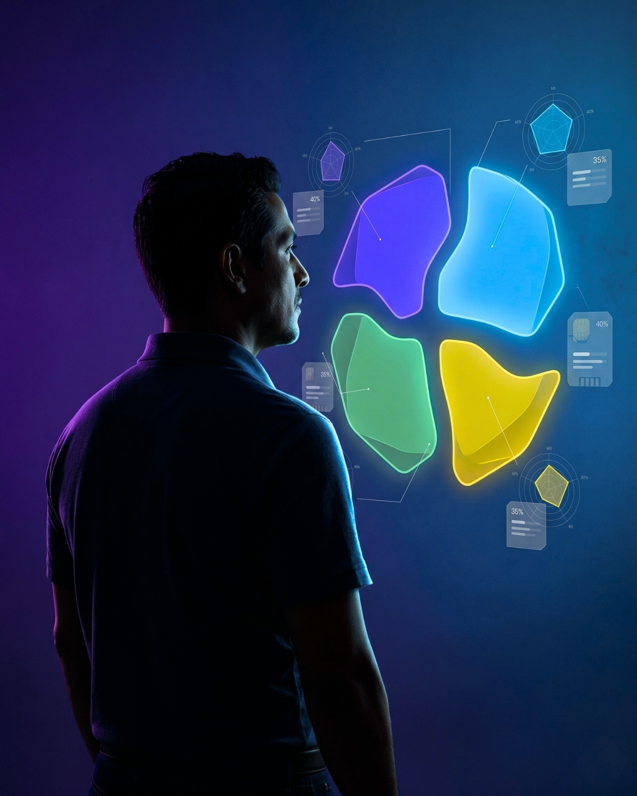
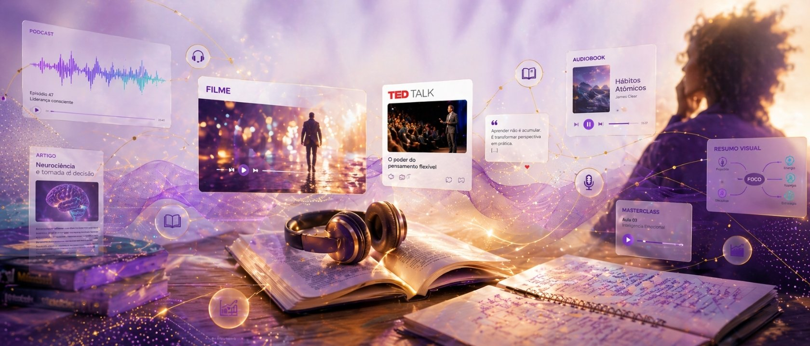
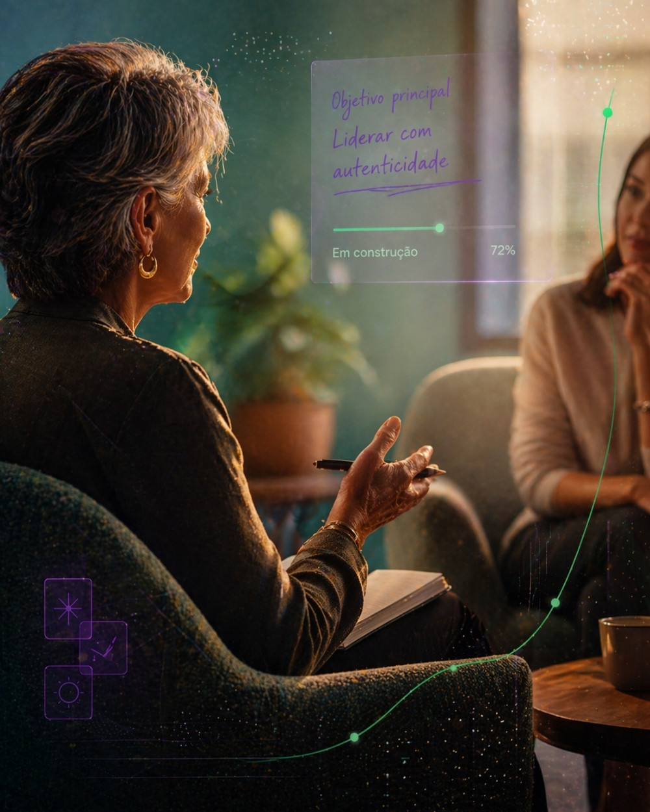

O ECO Líderes é um produto da ECO do B.E.M. criado para desenvolver líderes com método, acompanhamento e evidência de evolução. Em um ciclo de 6 meses, cada participante percorre uma jornada com diagnóstico individual, conteúdos imersivos, mentorias mensais e indicadores que mostram, com clareza, o progresso construído ao longo do processo.
O ECO Líderes é uma jornada de desenvolvimento humano corporativo completa. Ele combina ciência comportamental, curadoria de conteúdos, acompanhamento individual e aplicação prática para que o aprendizado realmente chegue à rotina da liderança.
O programa começa com um assessment completo para identificar perfil comportamental, autopercepção e os principais gaps de liderança.
Filmes, vídeos, podcasts, TED Talks, livros e exercícios transformam o estudo em reflexão e mudança comportamental.
Cada participante conta com mentorias mensais para interpretar resultados, ajustar rotas e aprofundar sua evolução como líder.
Os indicadores visualizam o quanto o desenvolvimento avança, com clareza para o participante e para a empresa.
Ao longo de 6 meses, o participante percorre fases bem definidas. Isso traz clareza, direção e segurança para o desenvolvimento, do começo ao encerramento do ciclo.
Levantamento do perfil do líder, com diagnóstico comportamental, autopercepção e definição do plano individual.
Estudo das competências priorizadas, avaliações, tarefas práticas e acompanhamento contínuo nas mentorias.
O aprendizado sai do ambiente de estudo e passa a ser testado, aplicado e comprovado na rotina da liderança.
Avaliação final da jornada, leitura dos indicadores, feedback do mentor e reconhecimento da evolução.
O ECO Líderes parte do princípio de que o desenvolvimento só faz sentido quando começa pelo entendimento real do líder. Por isso, o assessment não é um detalhe do programa — ele é a base da jornada.

O teste comportamental ajuda a identificar o estilo predominante do participante e como ele tende a agir, decidir, influenciar e lidar com a rotina da liderança. Ele mapeia dimensões essenciais da atuação profissional:
Energia para decisão, desafio e foco em resultado.
Comunicação, sociabilidade e mobilização de pessoas.
Consistência, cooperação e equilíbrio emocional.
Análise, precisão, cuidado e busca por qualidade.
O resultado do teste oferece uma leitura clara do perfil do líder e cria uma base mais segura para priorizar competências e orientar o desenvolvimento.
Além dos testes comportamentais, o participante avalia a própria percepção sobre suas competências. O cruzamento dessas informações amplia o autoconhecimento e ajuda a construir um plano mais coerente.
Leitura individual das próprias competências e desafios.
Comparação entre como o líder se vê e o que o perfil revela.
Identificação de pontos fortes, lacunas e oportunidades.
Definição das competências e da trilha para o ciclo.
O ECO Líderes trabalha as competências da liderança com uma grande curadoria de diferentes formatos de conteúdo. Você aprende se envolvendo. Isso torna a jornada mais dinâmica, mais humana e mais aderente aos estilos de aprendizagem de cada participante.

Entrar em contato com conteúdos que ampliam repertório e consciência.
Relacionar os temas estudados aos desafios concretos da própria liderança.
Testar novas atitudes, conversas e formas de atuação no dia a dia.
Registrar resultados, discutir com o mentor e sustentar o aprendizado.
Os indicadores ajudam a acompanhar o percurso do participante e a dar visibilidade para o que está sendo desenvolvido ao longo do ciclo.
As mentorias são um dos diferenciais do ECO Líderes. Elas ajudam o participante a interpretar a jornada, lidar com os desafios do contexto real e transformar aprendizado em ação consistente.

Momento de leitura do diagnóstico, entendimento do perfil e definição do plano individual que orientará todo o ciclo.
Encontros voltados a revisar progresso, discutir conteúdos, ajustar foco e fortalecer a execução das tarefas práticas.
Fase em que o foco se volta para a aplicação do aprendizado, a análise dos resultados e a consolidação dos casos de sucesso.
Momento de fechamento do ciclo, leitura da evolução e reconhecimento do desenvolvimento construído ao longo do programa.
O mentor ajuda a interpretar resultados, orientar prioridades, desafiar o participante e dar sustentação ao processo de mudança ao longo do ciclo.
Entre um encontro e outro, o líder consome conteúdos, executa tarefas, participa de eventos e aplica o que foi trabalhado na própria rotina.
No ECO Líderes, o desenvolvimento não termina no estudo. O participante é estimulado a aplicar o que aprendeu e a registrar os efeitos dessa aplicação em seu contexto real.
Compreensão do conceito e do comportamento trabalhado na trilha.
Experimentação do novo repertório na liderança e no relacionamento com a equipe.
Identificação de mudanças percebidas, impactos e ganhos concretos na prática de gestão.
Registro do que foi feito, do que mudou e do que pode ser considerado evidência do avanço.
A capacidade de levar o aprendizado para a prática fortalece o desenvolvimento no programa e contribui para o reconhecimento final do participante.
O dashboard dá transparência ao percurso do participante, organizando indicadores, progresso e leitura do ciclo de desenvolvimento.
O reconhecimento final leva em conta a consistência do participante ao longo do ciclo. A lógica não é premiar apenas presença, mas valorizar comprometimento, progresso e aplicação real.
Alcançar níveis mais altos no ECO Líderes significa mostrar maturidade de desenvolvimento, disciplina de percurso e capacidade de transformar aprendizado em prática de liderança.
Leitura mais clara sobre perfil, forças e pontos de desenvolvimento.
Uma trilha mais coerente com os desafios reais da liderança.
Aprendizagem em formatos mais humanos, imersivos e aplicáveis.
Mentorias para sustentar progresso e dar profundidade ao processo.
Indicadores e dashboard para acompanhar o percurso com clareza.
Certificação ao final do ciclo e possibilidade de novos percursos.
Além do percurso individual, o ECO Líderes inclui momentos coletivos para ampliar repertório, promover troca entre participantes e fortalecer temas relevantes para a liderança.
Temas atuais de liderança, comportamento e gestão com participação dos líderes do programa.
Materiais que reforçam a jornada e ajudam a aprofundar os temas do ciclo.
Espaço para compartilhar desafios, experiências e aprendizados dentro de um mesmo ecossistema.
Os webinários e eventos coletivos criam continuidade, ampliam repertório e reforçam a percepção de pertencimento à jornada. Eles ajudam a manter o líder conectado ao desenvolvimento durante todo o ciclo.
O ECO Líderes pode ser vivido como parte de uma jornada contínua. Ao concluir um ciclo, o participante pode avançar para novos focos de desenvolvimento e aprofundar sua liderança ao longo do tempo.
Primeira leitura da liderança, primeiros gaps e início da trilha de desenvolvimento.
Aprofundamento das competências e amadurecimento da aplicação prática.
Expansão do repertório e avanço em temas de maior complexidade de liderança.
Desenvolvimento sustentado, com novos focos e crescimento progressivo da liderança.
Você pode falar direto com nossa equipe para entender como o programa pode se encaixar na realidade da sua empresa, ou voltar para a home e navegar pelos demais produtos do ecossistema.
Produto da ECO do B.E.M. · Lideranças melhores. Equipes mais fortes.